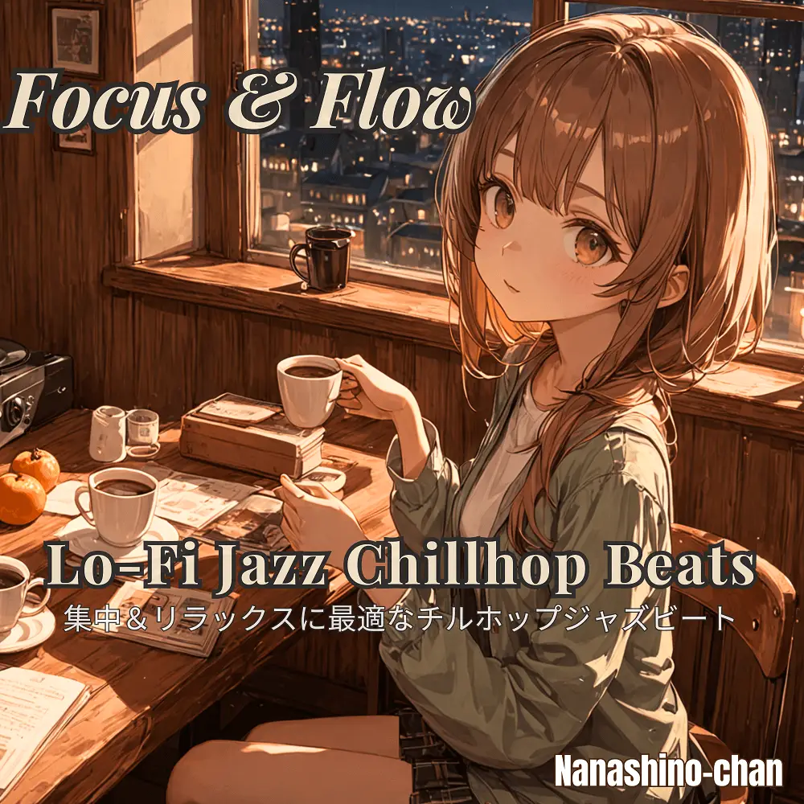

Lo-Fi · Jazz · Chillhop · Instrumental
Focus & Flow:Lo-Fi Jazz Chillhop Beats
Nanashino-chan
Explore Focus & Flow:Lo-Fi Jazz Chillhop Beats by Nanashino-chan: 25 instrumental tracks spanning Lo-Fi / Jazz / Chillhop / Instrumental. Start with Midnight Reflections / Serene Pathways, preview the collection and find your favorites on streaming services.
2025-02-27 · Released · 25 tracks · Instrumental
Preview the album
The jacket stays here until you choose a track. Playback uses YouTube.
YOUTUBE PREVIEW
Choose a track to listen
The jacket stays here until you choose a track. Playback uses YouTube.
If playback is unavailable, open the album or track on the streaming service.
Find this album on streaming services
Links marked “search” open search results. Select the album or track on the service.
Track list 25
- 01Midnight Reflections
- 02Serene Pathways
- 03Jazzed Out Dreams
- 04Quiet Conversations
- 05Velvet Night
- 06Chill Groove
- 07Breezy Moments
- 08Mellow Flow
- 09Starlit Vibes
- 10Golden Dusk
- 11Whispers in Time
- 12Silhouette in Blue
- 13Sunset Reverie
- 14Smooth Horizon
- 15Late Night Calm
- 16Moonlit Grooves
- 17Gentle Breeze
- 18Drift Away
- 19Echoes of Serenity
- 20Candlelight Chill
- 21Evening Glow
- 22Dreamy Solitude
- 23Soulful Silence
- 24Endless Jazz
- 25Mellow Goodbye
Find a sound for your next post
Copy “Nanashino-chan + track title” and paste it into your social app’s music search. Availability depends on your region and account. Copying the name does not grant usage rights.